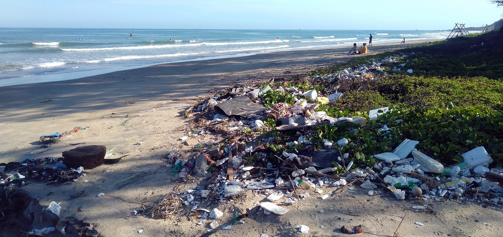

Introdução
A água é essencial para a existência da vida no planeta Terra. Em tempos de necessidade a falta de água pode causar alguns problemas sociais e até mesmo para o desenvolvimento econômico. Mas há um obstáculo que vem causando muitos problemas mais sérios, sendo a poluição de lagos, rios e oceanos
A poluição ocorre quando a água é alterada em suas propriedades biológicas com a presença de vírus e bactérias que podem causar doenças tornando a água imprópria para uso.
De acordo com a OMS (Organização Mundial da Saúde), água contaminada é aquela que sofre alterações em sua composição até ficar inutilizável sendo imprópria para consumo ou para atividades essenciais como a agricultura
Água contaminada é resultado de diferentes tipos de poluentes como: bactérias, plásticos, substâncias químicas e até radioativas. Esses poluentes são levados pelos rios chegando até o mar podendo acabar com o ecossistema marinho.
Suas causas podem ser naturais, mas são principalmente humanas. Os que mais oferecem riscos às águas do mar são os lixos e efluentes que saem dos tubos ligados diretamente ao mar, tráfegos marítimos como petroleiros e transporte de mercadorias ou derramamentos de combustíveis em viagens intercontinentais.
As principais consequências da poluição aos oceanos podem ser fatais para o ecossistema da Terra, destruindo a diversidade marinha, poluindo a cadeia alimentar, escassez de água potável, doenças, entre muitos outros.
Existem alguns tipos de poluição da água que será abordado nesse trabalho. São elas:
- Poluição sedimentar;
- Poluição térmica;
- Poluição química e radioativa;
- Poluição biológica;
Clique para ir ao Tópico
Poluição Térmica
A poluição termal ou poluição térmica trata-se do despejo de água em temperaturas mais elevadas que as condições ambientes em rios, mares e lagos.
A poluição térmica é pouco conhecida pela maioria das pessoas por ser difícil de ser detectada até mesmo para os ecologistas por ser invisível, mas pode causar tantos danos à natureza quanto os tipos de poluição já conhecidos. Acontece quando há uma alteração na temperatura de oceanos e rios, atingindo diretamente o ecossistema da Terra e seus habitantes. Embora haja causas naturais para que ela ocorra, grande parte da poluição térmica é provocada pelas indústrias e pelo desmatamento.
Em locais com pouca dispersão de ar, o escoamento de vapor de água em alta temperatura pode ser fatal para a biodiversidade do local. A água despejada quente diminui imediatamente a solubilidade do gás oxigênio presente na água, fazendo com que o O2 se difunda mais facilmente para a atmosfera. A ausência de gás O2 na água afeta todos os seres aquáticos, causando a morte de plantas, peixes e corais.
Para a refrigeração de centrais elétricas e usinas nucleares, a água retorna ao meio ambiente, porém com uma temperatura mais elevada. Esta alteração na temperatura da água pode provocar a diminuição do oxigênio e afetar o ecossistema de oceanos ou rios. Quando ocorre o aumento da temperatura da água, acima do normal tolerado pelo ecossistema, podem ocorrer também a desenvolvimento de bactérias e fungos, causadores de doenças em peixes e outras espécies marinhas.
Muitas indústrias utilizam água em diversos processos produtivos, principalmente para arrefecimento e depois depositam a água utilizada em rios e oceanos. Até mesmo estando limpas (despoluídas), elas entram no ecossistema com temperatura diferente.
A forma mais adequada de evitar esse tipo de poluição consiste na armazenagem da água por parte das indústrias. Em vez de despejar a água diretamente nos rios, o ideal é que o líquido seja guardado até alcançar uma temperatura adequada para ser eliminada na natureza sem causar danos. Mas também, as atitudes podem e devem começar dentro de casa. Alguns exemplos:

- Separar o lixo reciclável;
- Economizar energia elétrica;
- Reduzir o consumo de água;
- Descartar pilhas e baterias nos postos específicos para coleta;
- Não jogar o óleo de cozinha na pia, utilizar os postos de coleta apropriados;
- Usar papel reciclado;
- Trocar sacolas plásticas de supermercado por sacolas reutilizáveis;
- Sempre que possível, não utilizar carro, dar preferência aos transportes coletivos, caminhadas e bicicletas. Incentivar a carona solidária;
- Plantar árvores;
- Evitar usar materiais de plástico descartáveis, como garrafas, copos, talheres e canudos;
Portanto, podemos observar que a poluição térmica na maioria das vezes é causada pelo ser humano. A poluição térmica pode trazer sérios prejuízos ao meio ambiente, o aumento da temperatura das águas propicia o desenvolvimento de fungos e bactérias, que podem causar doenças em peixes e outros organismos, o que aumenta a taxa de mortalidade.
Poluição Química/Radioativa
A poluição química e radioativa é um grande problema ambiental que afeta negativamente a saúde humana e o meio ambiente. Ambas as formas de poluição são preocupantes porque seus efeitos podem ser sentidos a longo prazo e podem se estender por muitas gerações.
Fertilizantes agrícolas são os principais poluentes químicos, mas há também os compostos sintéticos (plásticos, inseticidas, solventes tintas, herbicidas, aditivos alimentares e detergentes), atividades domésticas, os derreamentos de petróleo nos acidentes de navios e na extração de petróleo, pois a maioria das jazidas petrolíferas ficam no fundo do mar. Esses produtos químicos podem causar uma série de problemas de saúde, como câncer, danos ao sistema nervoso, problemas respiratórios e irritação da pele.
Liberação de material radioativo na atmosfera, solo e água, experiências nucleares, lixos atômicos gerados em usinas nucleares e em hospitais são as grandes causas da poluição radioativa. A radiação pode causar danos celulares, danos ao DNA, câncer e outras doenças graves.
Grande parte da poluição marinha acontece por falta de saneamento básico, por isso é importante cobrar o governo para que haja o serviço na água. Entretanto, a população também tem uma parte de culpa, pois há pequenas atitudes para diminuir os resíduos em ambientes naturais:
- Não jogar lixos em lugares inadequados;
- Ter sacolas de preferência biodegradáveis;
- Não descartar óleos diretamente em ralos;
- Não fazer ligações clandestinas em esgotos;
- Não utilizar produtos tóxicos em processos químicos e agropecuários sem os filtros adequados.
Para a poluição radioativa há algumas soluções. O lixo nuclear, por exemplo, não possui uma forma de descarte adequado. Há locais que podem conter a radiação, e é neste local que atualmente é o mais indicado a se fazer com esse tipo de lixo. Existem outros modos de descarte, como enterrar em formações geográficas, entretanto nenhum deles totalmente seguro.
Outro fator é acabar também com os testes nucleares, pois eles trazem centenas de riscos, e também diminuir o uso de raios X na medicina.
Poluição Sedimentar

A poluição sedimentar é o resultado do acúmulo de resíduos em suspensão, que causa desequilíbrios ambientais.
Nas grandes cidades, onde a maioria destas substâncias é gerada, a poluição sedimentar é um problema encontrado principalmente na água, porque é nela que acaba sendo o destino final de toda substância solúvel.
Existem diversas partículas em suspensão no ar o tempo inteiro. Algumas, podem carregar consigo substâncias tóxicas que, aos poucos, acabam se aglutinando em áreas distantes de sua origem, trazendo problemas aos ecossistemas.
As partículas insolúveis também causam transtornos, ao criarem pequenas películas sobre regiões de água menos corrente, dificultando a entrada de luz solar e outros processos naturais. Esta fina camada acaba também dificultando o processo de fotossíntese das plantas aquáticas e a busca por alimento de alguns animais que vivem nesses ambientes, por conta da diminuição de visibilidade. Mesmo partículas sem materiais tóxicos podem gerar este efeito. Dentre as partículas que podem se acumular de modo a causar prejuízos ambientais gerando a poluição sedimentar estão as partículas de vidro, metálicas, as geradas em processos industriais e pela construção civil.
Vale lembrar ainda outros materiais bastante comuns em nosso dia a dia e que igualmente são capazes de gerar sedimentos poluentes, como as baterias domésticas e os automóveis – pneus, escapamento e o processo de corrosão do próprio veículo produzem este tipo de partícula. Desta forma, metais como chumbo, zinco, cobre, ferro e outros são lançados ao ar e terminam os seus trajetos na água das cidades.
Embora todos estes fatores sejam conhecidos, a poluição sedimentar ainda se apresenta como um grande desafio para ambientalistas e especialistas em geral. Seu combate só seria possível a partir de um grande processo de conscientização e de uma verdadeira mudança no estilo de vida, principalmente nos centros urbanos.
São exemplos de consequências da poluição da água:
- Perda da qualidade da água potável disponível em fontes diversas;
- Diminuição da biodiversidade local, especialmente animais e plantas aquáticas;
- Contaminação do nível freático e demais fontes de água diversas;
- Proliferação de doenças de vinculação hídrica, como hepatite, cólera e leptospirose;
- Acentuação do processo de eutrofização dos corpos hídricos.

A solução desse cenário perpassa por ações públicas e privadas que envolvam, principalmente, a emissão correta de poluentes de origem sólida e líquida. Nesse contexto, são ações possíveis para a atenuação do problema ambiental de poluição da água:
- Ampliação dos sistemas de saneamento básico;
- Preservação da vegetação, com destaque para as matas ciliares;
- Descarte correto de resíduos sólidos, como o lixo doméstico e industrial;
- Reaproveitamento e reciclagem de água utilizada para diversos fins;
- Adoção de medidas de segurança hídrica em atividades como a mineração;
- Aplicação correta de agrotóxicos e demais químicos em atividades como a agropecuária.
Levando-se em conta o que foi observado a poluição sedimentar é causada pela atuação indevida das práticas humanas e pode gerar impactos sobre as espécies e provocar a escassez desse recurso natural. Isso é resultado, por exemplo, da acumulação de lixos e detritos que possuem poluentes químicos e biológicos que impedem a entrada de luminosidade nos recursos hídricos, o que dificulta a fotossíntese realizada pelas algas e a visualização da comida pelos animais aquáticos.
Poluição Biológica
Com o aumento da atividade humana ao longo das últimas décadas, tem ocorrido um crescimento significativo na poluição biológica dos oceanos. A poluição biológica é causada pelo descarte irregular de alguns resíduos, tanto em estado solido como líquido.
Ela ocorre com a introdução de detritos orgânicos lançados geralmente por esgotos domésticos e industriais, podendo ser lançados diretamente na água ou podem infiltrar-se nos solos, atingindo águas de poços ou de nascentes. São compostos de micro-organismos patogênicos, tais como bactérias, vírus, vermes e protozoários oriundos.
A contaminação das águas marinhas produz vários agravantes, dentre eles, extinção de pontos turísticos litorâneos, diminuição da oferta de peixes e contaminação dos mesmos, em razão do esgoto. Também é possível se infectar com doenças que podem ser transmitidas aos humanos e animais, tais como febre tifoide, cólera, Salmonelose, leptospirose, hepatites, esquistossomose, amebíase e giardíase.
Na decomposição desses detritos, o oxigênio é consumido, causando um desequilíbrio em seu nível na água, o que provoca a morte de peixes e outros organismos aquáticos. A alta concentração de nutrientes gerados pela degradação dos compostos orgânicos cria a eutrofização (proliferação de algas que impedem a passagem da luz na superfície).
Para ser evitado a poluição biológica no oceano, garantir que a vida marinha prossiga saudável e que o mar continue sendo um habitat saudável para os animais:
- Não jogue óleo de cozinha ou outros produtos no ralo ou na água, existem outras formas mais benéficas de se descartar esses produtos.
- Descarte o lixo no local adequado.
- Não descarte sacolas plásticas, embalagens em lagos em rios ou no mar, caso contrário pode ter consequências graves a vida marinha.